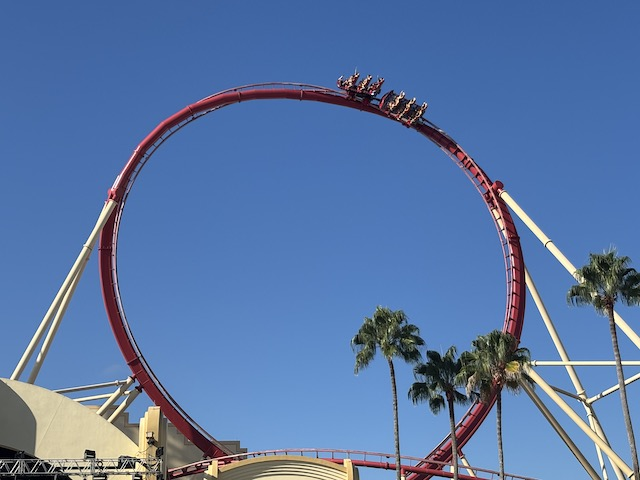
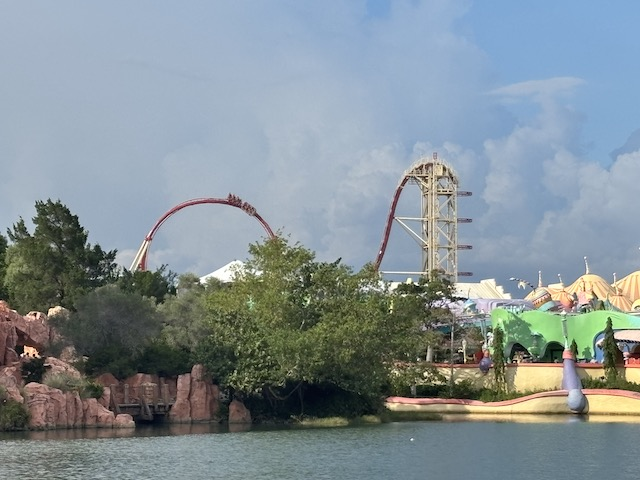
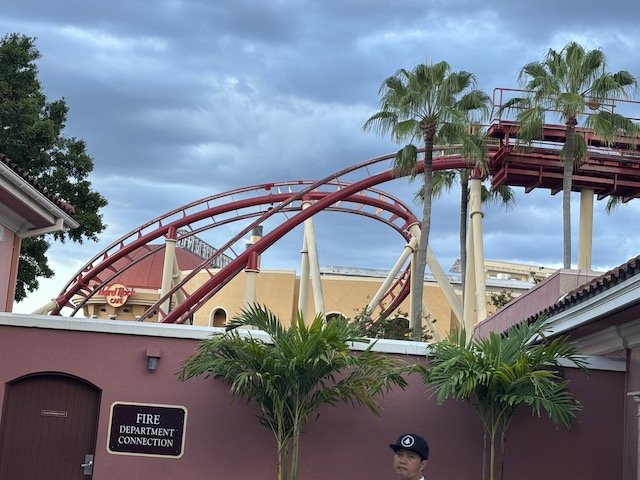
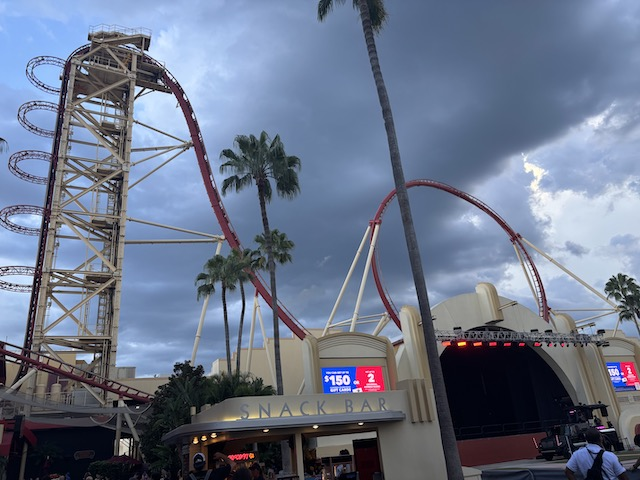
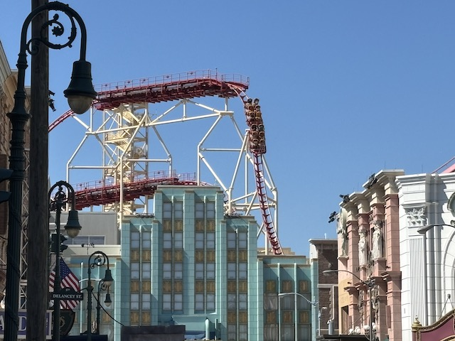
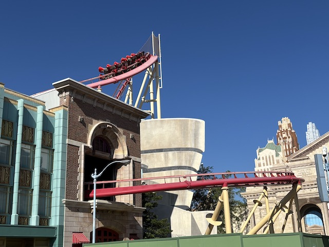
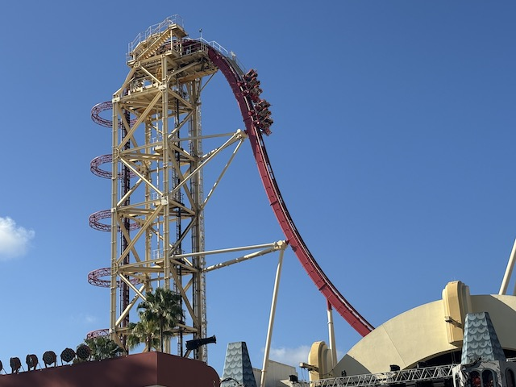
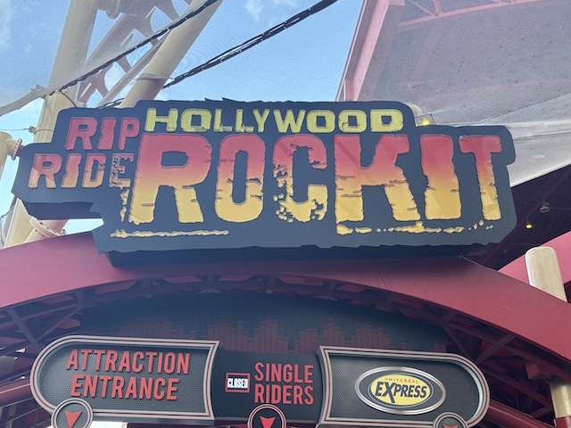

| |

Hollywood: Rip Ride Rockit Review

We're here at Universal Studios Florida, at the Universal Oerlando Resort. For today's review, we'll be going back in time to the 2nd to last day of operation for Hollywood: Rip Ride Rockit. Yep. My first and last ride on Rockit was 2 days before it officially closed forever. Why? Well, I procrastinated in getting to Florida, found out about my last year for Rockit was 2025. So I scrapped my initial plans for going at Halloweentime to ensure I'd get to ride Rockit when they announced that it was closing after Labor Day. I choose the days, book the airfare, and buy the tickets. Then I learned that they moved up Rockit's final day for the sake of demolishing it sooner for the sake of starting construction on its replacement coaster sooner. And.....it's last day is in the middle of my Florida trip. It's open when I fly in, but closed by the time I get to Universal Orlando. After a brief moment of panic, I simply change the dates of the trip, and....BAM!!! Made it on Hollywood: Rip Ride Rockit. And just by the skin of my teeth since I made it on this 2 days before iys death. And,,,,,this was a polarizing coaster in the enthusiast community. How so? Let's ride and see. After pulling down the restraints, and choosing our song, we're off. For my one ride, I chose to ride to "Welcome to the Black Parade" by My Chemical Romance since....the coaster was about to die, and I also really like that song. Unfortunately, the song just doesn't fit. You, see, the song starts with the slowe piano section, but you're going through all the fast stuff. By the time the song is turning into a proper rock song and picking up speed, Rockit is slowing down and hitting the brake run, leading to an abrupt cutoff. Oh well. We're off! We start climbing up the vertical lifthill, which.....these things are freaking cool. Not much of a view except for the sky, but we did go through thise rings. We reached the top and went down the first drop. It wasn't huge, or very steep. But it still gave us some decent speed before we rose up into the non-inverting loop. Twisring up into the sky, but always staying right side up. These elements are a ton of fun. I know some people compared this to Shock @ Rainbow Magicland. Except.....NO!!! They may be from the same manufacter, have the same cars, and look similar with big non-inverting loops. But they are very different rides, with Shock still alive, and Rockit not. And Shock is so much better. Anyways, back to Rockit. After the non-inverting loop, we head up a large hill and into a midcourse brake run. Aww, there goes most of our speed. We then went down a decent sized drop, and got a decent chunk of our speed back. We then headed into a tight turn, which gave us some nice laterals. This lead into an upward helix, which was still pretty cool. We then just went into this turnaround up in the air. That was pretty cool. We then rise up into another mid course brake. *Sigh* Not again, god damn it. And the ride gets a lot tamer here. We went down a small drop. This gave us some speed, but not nearly as much as before. We went through some.....it looked like atiny wave turn. A speed bump with laterals. But hey. That wasstill fun. We went straight into a tight banked turn. Hmm. There were some laterals here. We went up another hill, and into another midcourse brake run. Yep. Losing even more speed. We went down a small drop o the ground. This was fun, and gave us sone speed. We snaked through a low to the ground S Bend. We then went through another turnaround, which gave us some laterals. We pop into another brale run. This technically isn't the end. But what came next wasn't anything crazy. We dropped down, went through a small speed bump, and rose up into the brake run. So that was my one ride on Hollywood: Rip Ride Rockit. So on the one hand, No. This is far from the best rie ever, even at Universal Orlando, this was far from the best. It was overshadowed by Velocicoaster, Stardust Racers, Dueling Dragons, Hulk, and even more family coasters, like Hagrids. So when they reveal the replacement as Fast and the Furious, I'm not sad at all (I cn't wait to ride the Hollywood version later this year). But at the same time, this ride was f*cking fun. So when I heard other enthusiasts calling it rough, boring, and celebrating its demise. No. Go ride an actually bad coaster and then get back to me. And I'm glad I made the effort to get on this ride. It was a fun experience I'm glad I got under my belt.
7/10
Location: Universal Orlando Resort (Universal Studios Florida)
Opened: 2009
Died: August 18, 2025
Built by: Maurer Söhne
Last Ridden: August 16, 2025
Hollywood: Rip Ride Rockit Photos







Home
|